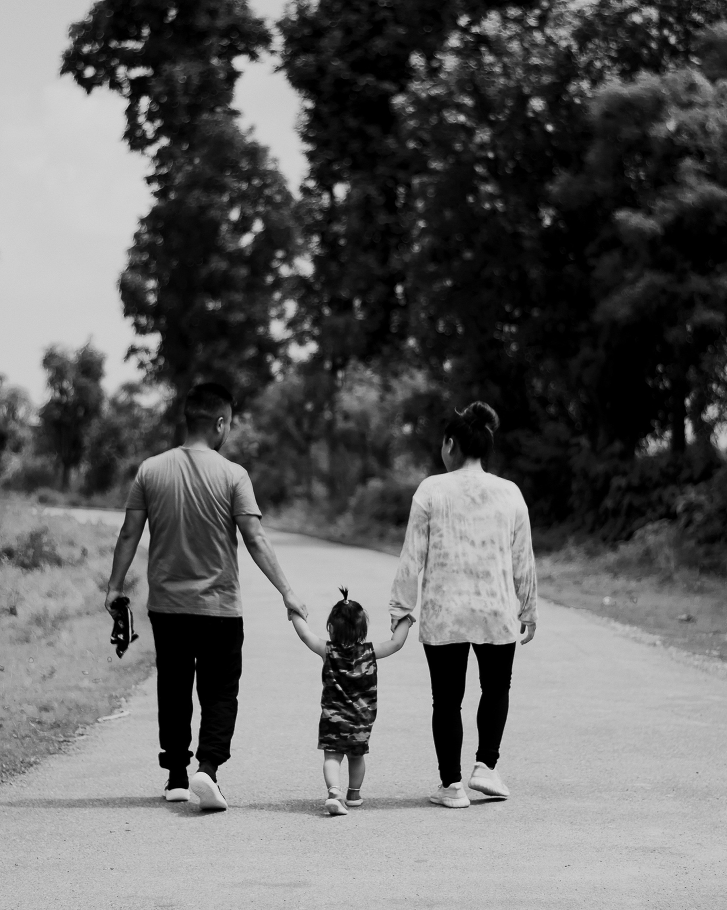

Pesan Hari Ini
Program "Pesan Hari Ini" dimulai pada tahun 2015 di bawah naungan Yayasan BBG oleh ibu Adryane, seorang pakar yang telah lama mendedikasikan diri dalam pelayanan keluarga di Focus on the Family Indonesia.
Sinergi antara keahlian konseling profesional Ibu Adryane dengan dukungan operasional serta manajemen donasi dari Yayasan kami, telah melahirkan sebuah pelayanan yang kokoh dan berkelanjutan selama lebih dari satu dekade bagi keluarga-keluarga di Indonesia.
Visi Kami
Membentuk landasan berpikir yang baik, karena setiap orang memiliki sesuatu yang "PENTING" karena tidak dimiliki orang lain. Bernilai "MULIA" yang berarti "KEKAL", tidak hanya untuk sekarang tetapi untuk masa mendatang.
Misi Kami
Menolong sebanyak mungkin masyarakat dari berbagai golongan dan latar belakang sosial agar memiliki dan memahami prinsip hidup yang baik dan benar sehingga setiap orang menghargai kehidupannya.

Keluarga
Fokus pada pemulihan hubungan suami-istri, pola asuh anak, dan tantangan remaja.
Solusi Sosial
Membahas isu perselingkuhan, judi, keuangan, hingga pencegahan pelecehan seksual.
Koneksi Rohani
Layanan konseling dan jembatan bagi pendengar untuk terhubung dengan gereja lokal.